编者注：在1月17日的JumpServer开源堡垒机v3.0预发布恳谈会直播中，JumpServer创始人广宏伟与大家分享了JumpServer
v3.0版本的设计思路与功能亮点。在v3.0版本正式发布之前，JumpServer开源项目组基于此次直播内容为大家整理总结了JumpServer v3.0版本的设计重点，旨在帮助大家更好地理解JumpServer v3.0的重构思路。
《JumpServer开源堡垒机v3.0预发布恳谈会》直播回顾请访问“JumpServer开源堡垒机”视频号，在“直播回放”中观看即可。
核心问答
问：JumpServer开源堡垒机为什么要做v3.0版本？
答：自2020年6月发布V2版本至今，JumpServer坚持每月发布新版本，在V2的大版本内共累计迭代了28个版本。在这两年多的时间里，JumpServer的研发团队激进过，也妥协过，在功能迭代的过程中发现了一些产品设计不合理、冗余的地方。与此同时，长期保持每月发布一个版本的迭代速度也使得JumpServer的部分功能设计没有经过完全的深思熟虑，导致了整个系统越来越臃肿，我们必须对其做“减法”。
此外，社区用户的反馈也让我们收集到了不同规模企业用户关于JumpServer V2版本的建议和需求，一些规模较大的企业用户的部分功能需求在V2版本的技术架构下难以满足，其中的原因归结于JumpServer底层设计架构的局限。
综合以上原因，为了给广大企业用户带来更加卓越的运维安全管理体验，我们决定启动v3.0版本的研发，对JumpServer的技术架构进行重构。
问：JumpServer开源堡垒机v3.0版本什么时候发布？
答：JumpServer v3.0版本预计在2023年2月27日正式发布。欢迎大家在版本正式发布之后部署体验v3.0版本，除了本次直播分享的一些核心功能设计以外，还有更多的新增功能设计等待大家前去探索。而更多的社区反馈也有助于我们在未来不断完善JumpServer的功能设计和产品体验。
JumpServer v3.0：一款“内外兼修”的堡垒机
堡垒机作为一款企业IT部门高频使用的工具软件，用户的使用体验至关重要。在过去的几个月里，我们的研发团队在原有的产品设计上进行了结构化调整，重构底层技术架构，通过改变管理模型的方式来兼顾不同规模和类型用户的实际使用场景，基于用户、系统用户、资产和授权这四个维度对JumpServer中的大部分使用场景进行了重新设计。
在JumpServer开源堡垒机v3.0版本的设计过程中，我们秉持“内外兼修”的原则，旨在进一步提升用户的使用体验，真正用心做好一款开源堡垒机。
内：核心功能全面优化设计
1. 系统用户重新设计：系统用户重构为账号，放弃系统用户中间层
在JumpServer过去的版本中，系统用户承担了太多的职责。用户通过系统用户创建表单时可以看到，JumpServer的系统用户承担了包括创建账号、用户切换、自动推送、动态用户、命令过滤、AD（Active Directory）、SFTP Home在内的众多职责。这样一来，系统用户的功能显得十分臃肿，尤其企业用户使用系统改密功能时，情况会变得复杂且难以维护。
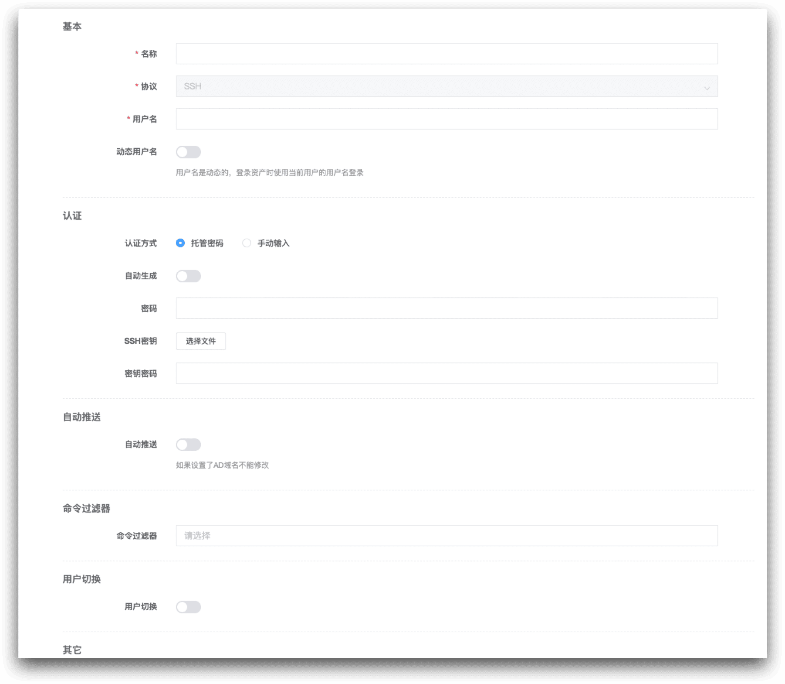
▲ 图1 旧版本系统用户创建表单JumpServer设计系统用户的初衷其实是作为账号存在的，通过特权账号创建系统用户，用户不需要在资产上一个个繁琐地添加账号， 并且包含自动创建账号和自动推送的功能，不需要进行额外的维护。这在资产规模比较小、大多数用户的账号密码相同的情况下，使用起来非常便捷。
但是随着JumpServer用户规模和使用范围的不断扩大，对于拥有大量IT资产，并且等保安全要求其资产密码都要不一样的大中型企业，这带来了比较大的困扰。当一个系统用户在不同的资产上有不同的密码需求时，系统用户功能难以满足他们的需求，难以进行授权，问题变得比较复杂。
为了解决这个问题，我们将系统用户和账号进行分离。系统用户关联资产时会产生一个账号，一个系统用户在不同的资产上允许产生不同的账号，联表计算之后形成一个账号集，即账号列表。这样做的目的是满足用户拥有大规模IT资产场景的需要，但是在用户实际的使用过程中，面对拥有几十万账号的业务场景，计算量庞大，导致搜索速度很慢，账号列表也很容易出现问题而崩溃，因此我们最终决定对系统用户进行重新设计。
在JumpServer v3.0版本中，系统用户重构为账号，放弃系统用户中间层。这就意味着在JumpServer v3.0以及后续版本中，不会再有“系统用户”的概念。用户直接在资产上添加账号，在添加资产时需要添加一系列的凭证来设置账号权限，一个账号对应一个资产。这样一来，用户在登录资产时，可以直接在资产上选择有哪些权限的账号可以进行登录，省去了原来需要通过系统用户登录的中间步骤。
在比较简单的使用场景中，用户在创建资产时还可以选择账号模版，自动根据模版上的用户名密码创建账号，更为快速便捷。在进行授权时，将原先选择系统用户的步骤改为选择账号用户名，除了指定用户名以外，还设计了包括所有账号、手动账号、同名账号在内的虚拟账号，以对应不同的授权策略。
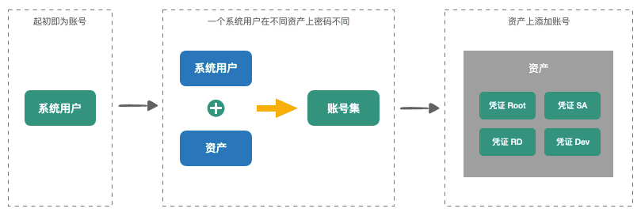
▲ 图2 系统用户和账号的演变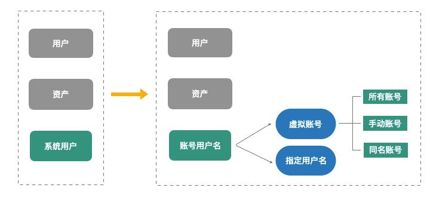
▲ 图3 对授权策略影响的变化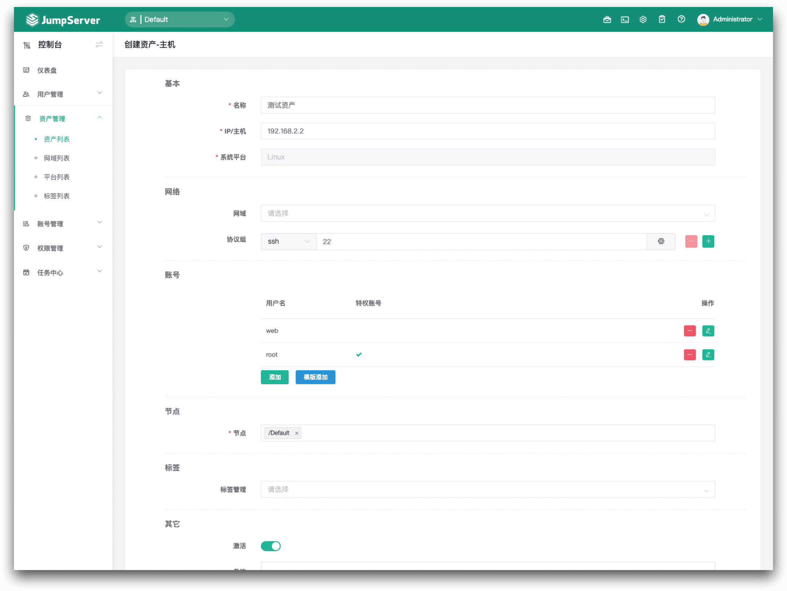
▲ 图4 新版本创建资产账号界面同时，JumpServer v3.0版本新增“账号管理”模块，通过账号列表可以看到所有的账号，由此可以开展账号收集、账号推送、账号模版、账号改密、账号备份等功能，账号推送功能也有助于我们的研发团队后续进行更多的自动化设计。
此外，特权账号功能是未来JumpServer v3.0版本发展的一个重点，我们也会围绕账号功能展开更多的安全审计工作。
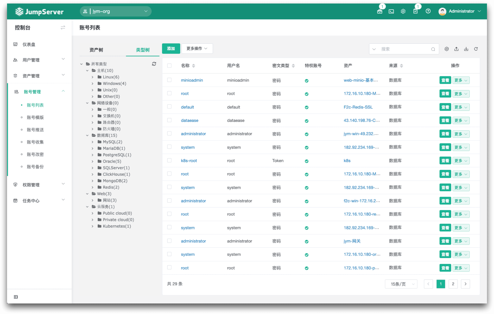
▲ 图5 新版本的资产列表界面2. 资产和应用合并：化繁为简
起初JumpServer设计中只有资产，后来为了支持数据库连接，新增了应用，包括数据库、Kubernetes、远程应用以及其他应用。因为每种应用可能都有单独的一些字段，所以我们不得不新增了Application表，以便和资产区分开来。我们做了很多冗余的工作，这也就导致很多后端的数据关系表会和资产一样存在多份，比如授权表、系统用户关系表、命令过滤表等，数据库和API都存在冗余的现象。
在JumpServer v3.0版本中，我们化繁为简，将资产和应用合并，统称为资产，强化资产平台方面的职责。
根据字段属性是否大致相同，我们将之前的资产拆分为主机、数据库、网络设备、云服务、Web以及其他类别。用户在创建资产时，首先需要选择对应的平台类别，每种类别下对应更加细化的内置资产类型。
合并资产和应用之后，资产表的结构也发生了变化，用户的管理操作首先围绕通用表结构来进行，实际使用到数据库、Web、主机、网络设备、云的时候，再根据不同的类型进行详细的单独表格处理。
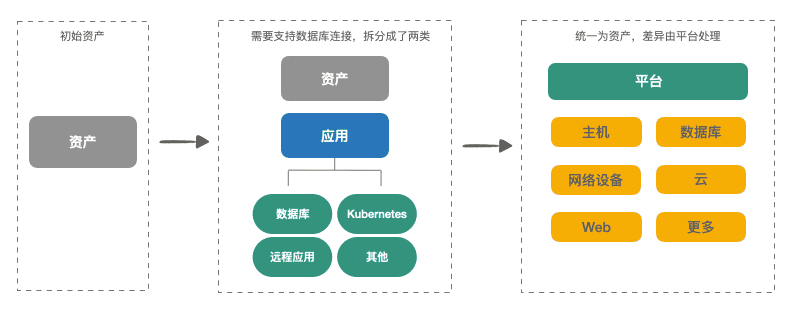
▲ 图6 资产的演变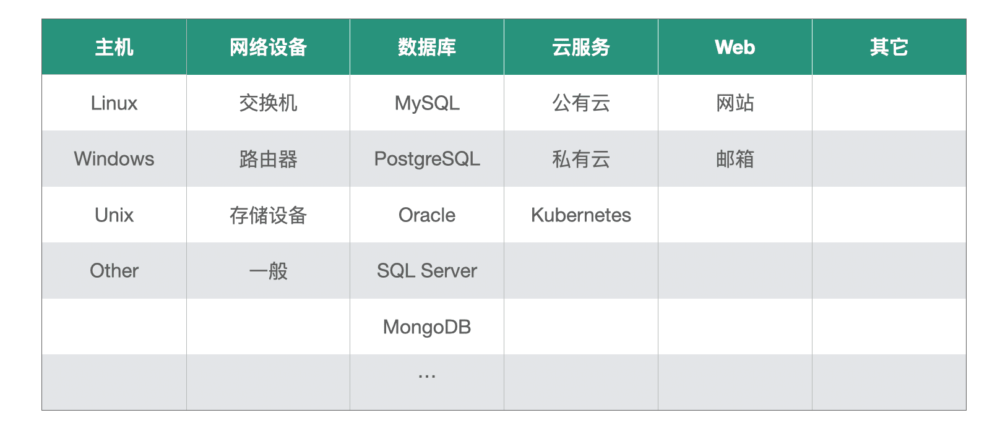
▲ 图7 资产类型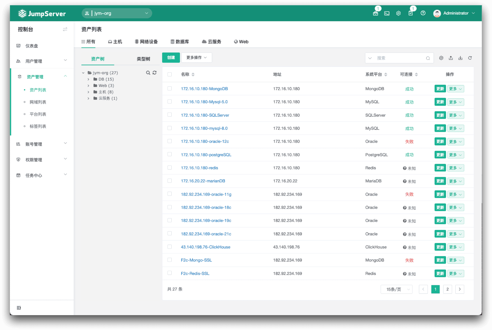
▲ 图8 新版本的资产列表界面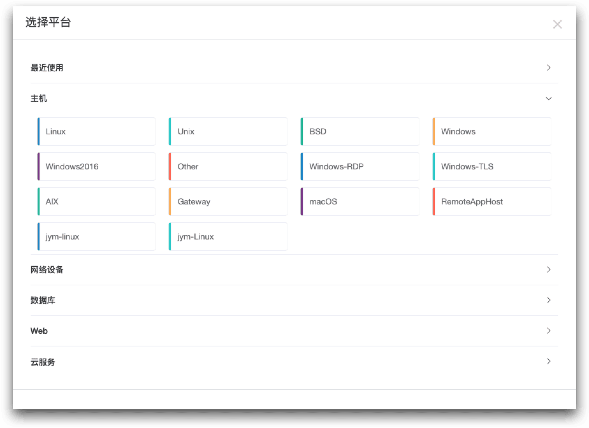
▲ 图9 创建资产时选择平台3. 资产平台重新设计：平台是资产的抽象和约束
资产与应用合并之后，强化了资产平台的作用，因此我们需要对资产平台也进行重新设计，对资产进行约束。
原有的资产平台主要用来区分操作系统、编码差异以及Windows差异，本质上来说只是起到了标记的作用。而在JumpServer v3.0版本中，新平台除了可以区分资产类型，还可以定制一些功能，比如资产是否能开启网域、能进行哪些协议和配置、是否支持账号切换功能等，这些都可以直接在平台上进行定义和设置。
另外，通过新的资产平台，用户还可以灵活定义自动化配置，包括资产探活方式、改密方式、账号推送、su切换方式、收集账号、收集信息等。
我们所有的自动化功能都依赖于Ansible自动化运维工具，因此不需要我们再进行额外的Python代码填写，可以直接选择资产和账号来进行配置。这样做的优势是提升了系统的自动化程度，提高配置效率，也在一定程度上减轻了我们的工作量，让我们有更多的精力专注于更重要的功能优化。
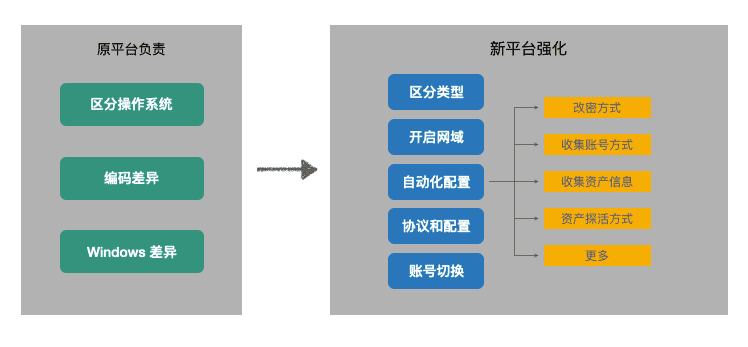
▲ 图10 资产平台的变化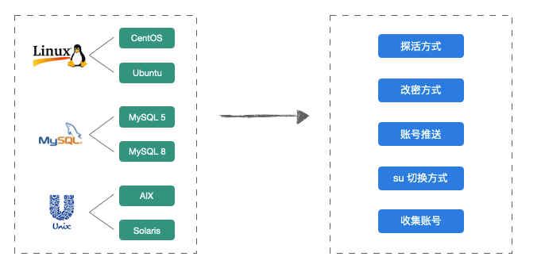
▲ 图11 灵活定义自动化配置用户连接到资产时可能某种资产或者某个协议会有一些特殊的表现需要进行设置。平台强化之后，设置项的内容更为丰富，用户可以根据资产的特点创建对应的系统平台并进行设置。
大多数相同的资产信息可以在系统平台上统一设置，对于某些资产特有的信息可以单独在某资产上进行修改；与认证有关信息的可以在账号上进行设置；对于使用同一个账号连接资产时，认证信息不一样，也可以在连接时进行配置。
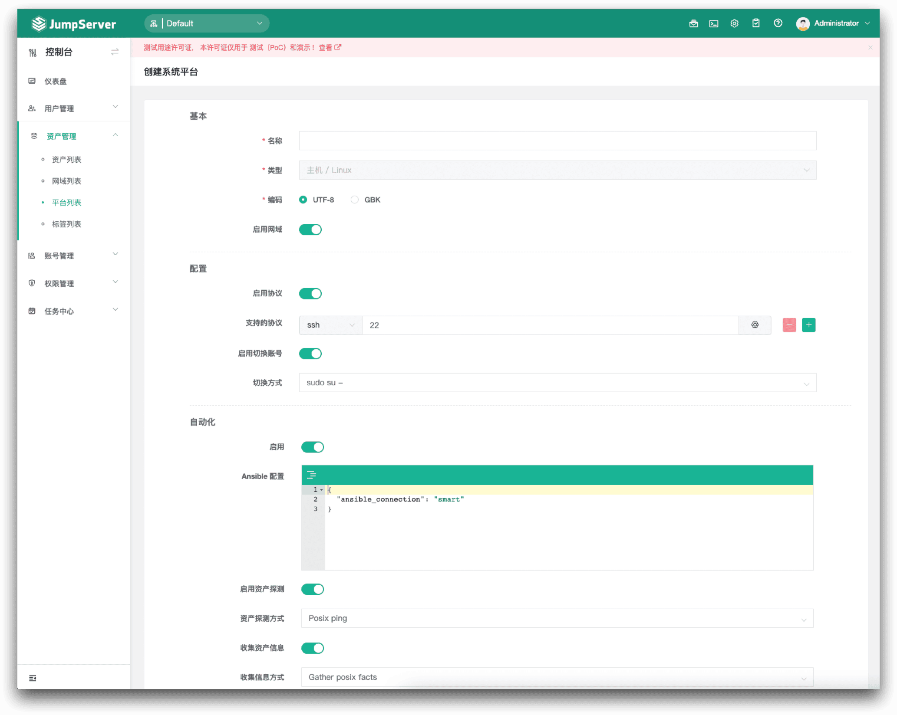
▲ 图12 创建系统平台界面4. RemoteApp远程应用重新设计：远程应用是未来扩展的核心
JumpServer中原来的RemoteApp远程应用是一种应用类别，只是作为JumpServer的一种能力存在的。每个远程应用需要配置一个依赖的RDP资产，在资产上安装应用，然后通过托管程序拉起、这种使用方式比较基础，开发和复用起来十分麻烦。面对不同的使用场景，需要在每个客户端中进行重新配置，不便于我们进行扩展和定制开发，无法满足很多企业用户的需求，部署交付比较消耗人力。因此在JumpServer v3.0版本中，我们对远程应用进行了重新设计。
远程应用是JumpServer未来扩展的核心，也是JumpServer v3.0版本重构中非常重要的部分。我们的研发团队很重视远程应用的重新设计，在JumpServer v3.0版本中做了重大的更新。
在JumpServer v3.0版本中，RemoteApp的改变包括：
■ RemoteApp远程应用将作为一种连接方式存在，主要用于连接资产，而不再是一种应用类型；
■ RemoteApp的主机池由JumpServer进行统一维护，并且能定时上报状态；
■ 用户提供Windows资产并安装基础组件之后，JumpServer会在应用发布机上代理执行自动化的工作，这样一来，RemoteApp主机就可以自动部署、自动维护；
■ 密码代填功能使用Python框架完成，而不再使用AutoHotKey，准确性更强；
■ 添加RemoteApp类型后，需要声明支持的协议。
新版本的JumpServer共有三种连接方式，分别是基于原始协议级实现的本地客户端连接方式、基于Web实现的Web连接方式，以及基于RemoteApp实现代理的远程应用连接方式。当用户连接资产的时候，可以根据该资产已有协议来选择连接方式，系统将会提供多种连接方式供用户选择。
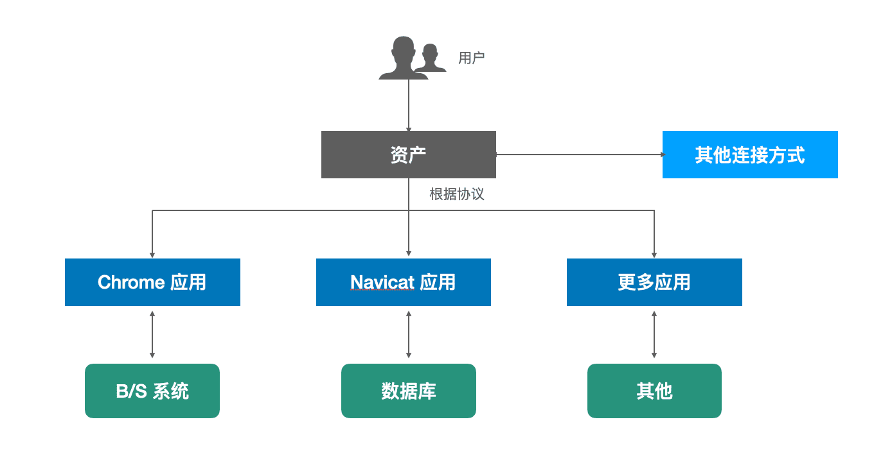
▲ 图13 新版本RemoteApp远程应用设计原理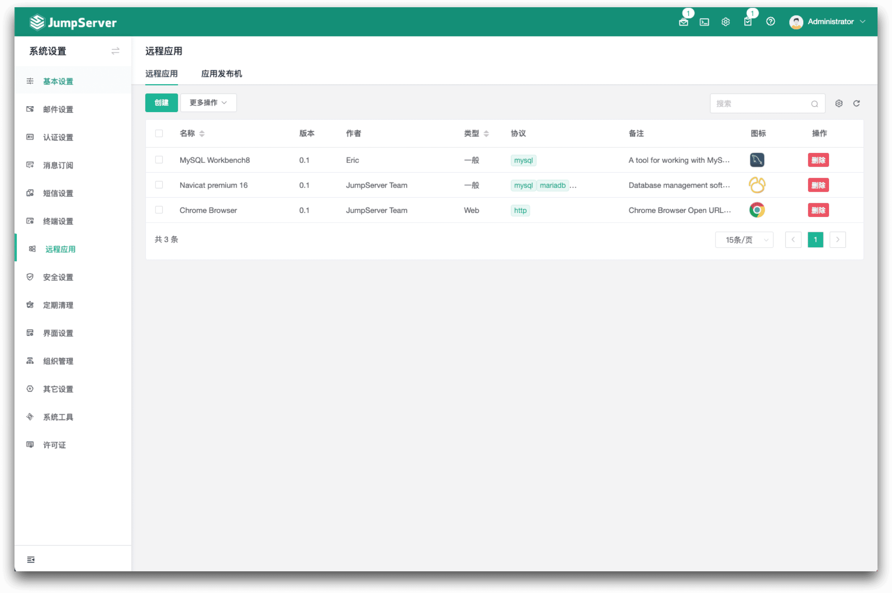
▲ 图14 新版本远程应用界面外：全新UI设计，简约而直白
除了内在的功能外，JumpServer v3.0的操作界面也做了全新的升级。专业设计师对JumpServer界面进行了全新的UI设计，仪表盘数据更加直观，并且重新调整了功能布局。
简约而直白的设计将大幅提升用户的使用体验。未来，我们也会提供不同的主题配色，以满足更多用户的个性化审美需求。
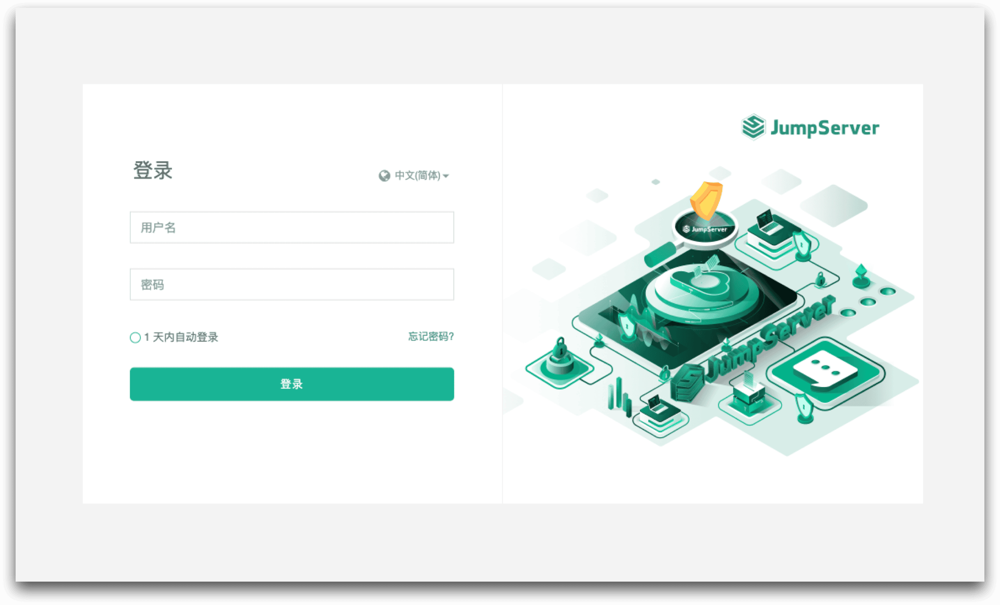
▲ 图15 新版本JumpServer登录界面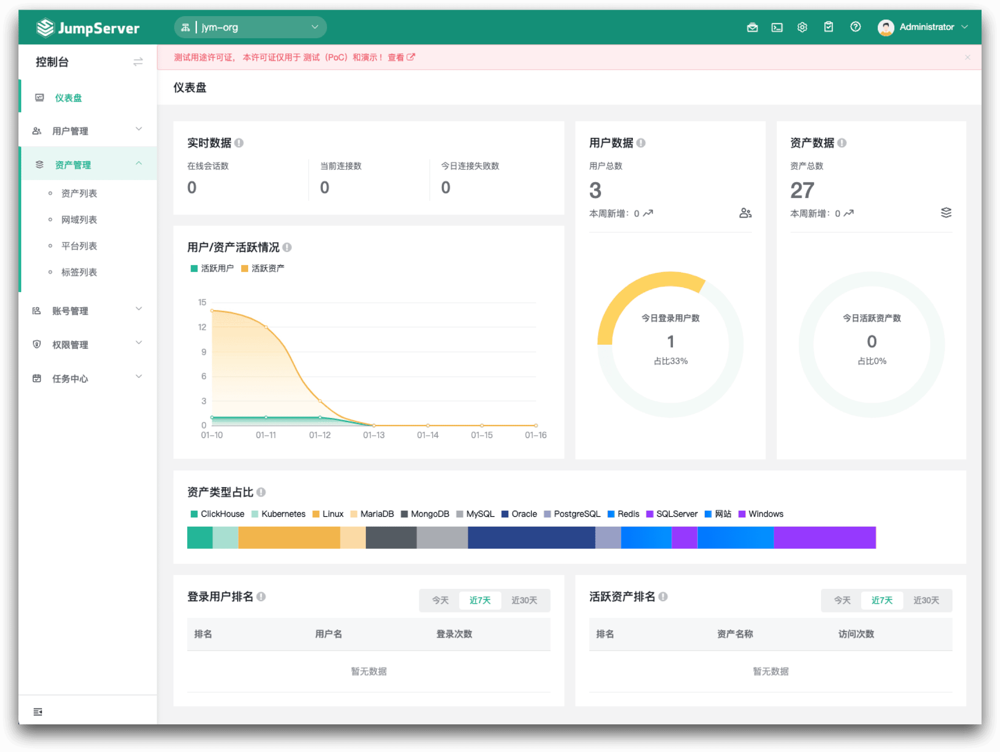
▲ 图16 新版本JumpServer仪表盘界面